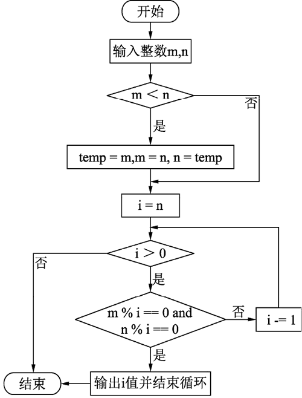

首页 > 编程笔记
Python求最大公约数详解
求任意两个正整数的最大公约数（Greatest Common Divisor，GCD）。
根据约数的定义可知，某个数的所有约数必不大于这个数本身，几个自然数的最大公约数必不大于其中任何一个数。要求任意两个正整数的最大公约数即求出一个不大于这两个数中的任何一个，但又能同时整除两个整数的最大自然数。
无论按照从小到大还是从大到小的顺序寻找最大公约数，最关键的是找出两数中较小的数。对于输入的两个正整数 m 和 n，相同的数据可能因为输入顺序不同导致变量 m、n 中存储数据的大小不同，如 m=8、n=4 与 m=4、n=8，但无论变量中值的大小顺序怎么样最后的结果应该是相同的。
为了避免相同数据因输入顺序不同而出现不同的结果，也为了使程序具有一般性，对于每次输入的值先进行大小排序，规定变量 m 中存储大数、变量 n 中存储小数。
两个数的最大公约数有可能是其中较小的数，故在按从大到小的顺序寻找最大公约数时，循环变量 i 的初值从较小的数 n 开始依次递减，去寻找第一个能同时整除两个整数的自然数，并将其输出。需要注意的是，虽然判定条件是 i>0，但在找到第一个满足条件的 i 值后，循环没必要继续进行，如 25 和 15，最大公约数是 5，对于后面的 4、3、2、1 便没必要再去执行。
第二种思路，按照从小到大的顺序穷举两数公约数的程序代码如下：
辗转相除法用到的原理很简单，假设用 f(x,y) 表示 x 和 y 的最大公约数，取 k=x/y，b=x%y，则 x=ky+b，如果一个数能够同时整除 x 和 y，则必能同时整除 b 和 y；而能够同时整除 b 和 y 的数也必能同时整除 x 和 y，即 x 和 y 的公约数与 b 和 y 的公约数是相同的，其最大公约数也是相同的，则有 f(x,y)=f(y,x%y)（y>0），如此便可把原问题转换为求两个更小数的最大公约数，直到其中一个数为 0，剩下的另外一个数就是两者最大的公约数。
例如，12 和 30 的公约数有：1、2、3、6，其中 6 就是 12 和 30 的最大公约数。
欧几里德算法，其思想可概括如下：
以求 288 和 123 的最大公约数为例，操作如下：
在进行辗转相除之前同样要确定两数中的大数和小数，将其分别存放在不同变量中。
相应程序段如下：
问题分析
如果有一个自然数 a 能被自然数 b 整除，则称 a 为 b 的倍数，b 为 a 的约数。几个自然数公有的约数，叫作这几个自然数的公约数。公约数中最大的一个公约数，称为这几个自然数的最大公约数。根据约数的定义可知，某个数的所有约数必不大于这个数本身，几个自然数的最大公约数必不大于其中任何一个数。要求任意两个正整数的最大公约数即求出一个不大于这两个数中的任何一个，但又能同时整除两个整数的最大自然数。
算法设计
比较简单的思路有两种，第一种，采用穷举法按从小到大（初值为 1，最大值为两个整数当中较小的数）的顺序将所有满足条件的公约数列出，输出其中最大的一个；第二种，按照从大（两整数中较小的数）到小（最小的整数1）的顺序求出第一个能同时整除两个整数的自然数，即为所求。无论按照从小到大还是从大到小的顺序寻找最大公约数，最关键的是找出两数中较小的数。对于输入的两个正整数 m 和 n，相同的数据可能因为输入顺序不同导致变量 m、n 中存储数据的大小不同，如 m=8、n=4 与 m=4、n=8，但无论变量中值的大小顺序怎么样最后的结果应该是相同的。
为了避免相同数据因输入顺序不同而出现不同的结果，也为了使程序具有一般性，对于每次输入的值先进行大小排序，规定变量 m 中存储大数、变量 n 中存储小数。
两个数的最大公约数有可能是其中较小的数，故在按从大到小的顺序寻找最大公约数时，循环变量 i 的初值从较小的数 n 开始依次递减，去寻找第一个能同时整除两个整数的自然数，并将其输出。需要注意的是，虽然判定条件是 i>0，但在找到第一个满足条件的 i 值后，循环没必要继续进行，如 25 和 15，最大公约数是 5，对于后面的 4、3、2、1 便没必要再去执行。
确定程序框架
程序的流程图如下图所示：

完整的程序
第一种思路，按照从到小的顺序寻找满足条件的自然数：
if __name__ == "__main__":
print("请输入两个整数")
m = int(input("m = "))
n = int(input("n = "))
if m < n: # 比较大小，使得m中存储大数，n中存储小数
# 交换m和n的值
temp = m
m = n
n = temp
i = n # 按照从大到小的顺序寻找满足条件的自然数
while i > 0:
if m % i == 0 and n % i == 0:
# 输出满足条件的自然数并结束循环
print("%d 和 %d 的最大公约数是： %d" %(m, n, i))
break
i -= 1
运行结果为：
请输入两个整数
m = 1997
n = 615
1997 和 615 的最大公约数是： 1
第二种思路，按照从小到大的顺序穷举两数公约数的程序代码如下：
if __name__ == "__main__":
print("请输入两个整数")
m = int(input("m = "))
n = int(input("n = "))
# 比较两个数的大小，进行交换
if m < n:
temp = n
n = m
m = temp
for i in range(1, n):
if m % i == 0 and n % i == 0:
k = i # 将当前情况下的最大公约数存储在k中
print("%d 和 %d 的最大公约数是：%d" %(m, n, k))
运行结果为：
请输入两个整数
m = 1997
n = 615
1997 和 615 的最大公约数是： 1
辗转相除法求最大公约数
除了以上两种方法外，早在公元前 300 年左右，欧几里得就在他的著作《几何原本》中给出了求最大公约数高效的解法——辗转相除法。辗转相除法用到的原理很简单，假设用 f(x,y) 表示 x 和 y 的最大公约数，取 k=x/y，b=x%y，则 x=ky+b，如果一个数能够同时整除 x 和 y，则必能同时整除 b 和 y；而能够同时整除 b 和 y 的数也必能同时整除 x 和 y，即 x 和 y 的公约数与 b 和 y 的公约数是相同的，其最大公约数也是相同的，则有 f(x,y)=f(y,x%y)（y>0），如此便可把原问题转换为求两个更小数的最大公约数，直到其中一个数为 0，剩下的另外一个数就是两者最大的公约数。
例如，12 和 30 的公约数有：1、2、3、6，其中 6 就是 12 和 30 的最大公约数。
欧几里德算法，其思想可概括如下：
- 用较大的数 m 除以较小的数 n，得到的余数存储到变量 b 中，b=m%n。
- 上一步中较小的除数 n 和得出的余数 b 构成新的一对数，并分别赋值给 m 和 n，继续做上面的除法。
- 若余数为 0，其中较小的数（即除数）就是最大公约数。否则重复步骤 1 和步骤 2。
以求 288 和 123 的最大公约数为例，操作如下：
288÷123=2余42
123÷42=2余39
42÷39=1余3
39÷3=13
在进行辗转相除之前同样要确定两数中的大数和小数，将其分别存放在不同变量中。
相应程序段如下：
if __name__ == "__main__":
print("请输入两个整数")
m = int(input("m = ")) # m存储较大数
n = int(input("n = ")) # n存储较小数
print("%d 和 %d 的最大公约数是： " % (m, n), end="")
# 比较两个数的大小，进行交换，使得m是最大数，n是最小数
if m < n:
temp = n
n = m
m = temp
b = m % n # b存储m 和 n取模得到的余数
while b != 0:
m = n # 原来的小数作为下次运算时的大数
n = b # 将上一次的余数作为下次相除时的小数
b = m % n
print("%d" %n)
运行结果为：
请输入两个整数
m = 1997
n = 615
1997 和 615 的最大公约数是： 1
关注公众号「站长严长生」，在手机上阅读所有教程，随时随地都能学习。内含一款搜索神器，免费下载全网书籍和视频。

微信扫码关注公众号